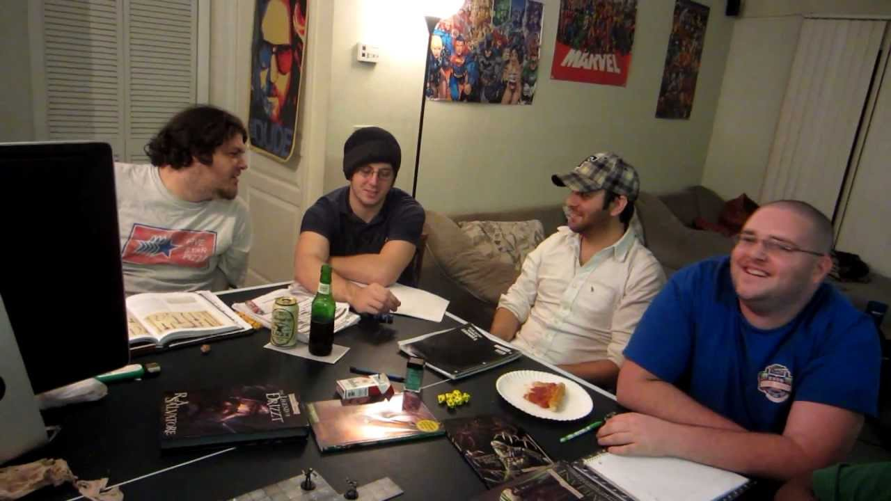

Why I Had To Clap Back At "D&D Is For Nerds"
At some point in every gamer's life, a friend drops the classic take: "D&D is for nerds." In my case, that friend was Seth. Yes, the same Seth who wrote a heartfelt essay about how Dungeons & Dragons literally rebuilt his life from the ground up. The math wasn't mathing, so I had to say something.
Look, I get where the stereotype comes from. You hear "tabletop role‑playing game" and your brain immediately loads up a mental image of a dim basement, suspicious amounts of Mountain Dew, and someone arguing about encumbrance rules. But that version of D&D is like saying guitars are for nerds because one kid in your school wore a Metallica shirt every day.
"Nerd" Isn't The Insult You Think It Is
First off, calling something "for nerds" stopped being an insult the second nerds took over literally every cool industry. Movies? Nerds. Video games? Nerds. Tech? Wall‑to‑wall nerds. The MCU alone is a multi‑billion‑dollar shrine to what used to be "nerd stuff."
So when someone hits D&D with the "that's for nerds" line, what they're accidentally saying is: "That's for people who are creative, collaborative, detail‑oriented, and emotionally invested in shared storytelling." Oh no, not that. Anything but humans with imagination and social skills.
D&D Is Social On Purpose
In Seth's original piece, he talks about how Thursday night sessions became the one place he felt genuinely needed. That's not a nerd thing. That's a human survival thing. We are basically pack animals with Wi‑Fi. We survive by having people who notice when we don't show up.
The magic of D&D isn't the dragons. It's the way a random group of people slowly becomes a party. You learn how your friends think, how they react under pressure, who min‑maxes their stats and who roleplays a disaster bard with a gambling problem. You're not hiding from real life at that table; you're practicing for it with extra dice and fewer HR consequences.
It's Problem‑Solving, Not Just Pretend
One of my favorite parts of Seth's story is when he describes cracking a brutal dungeon puzzle and the whole table cheering. That's the entire game in a nutshell: you get dropped into an impossible situation, you brainstorm like a chaotic startup, and eventually someone blurts out the wild idea that actually works.
Companies pay consultants six figures to run "team‑building exercises" that are just sad, HR‑approved versions of this exact feeling. D&D players get it for the price of pizza and a set of polyhedral dice.
Okay, But Let's Gently Roast Seth
Seth, buddy, you can't write an entire article about how D&D gave you back your voice, your confidence, and your social circle, and then side‑eye the game like it's some fringe hobby for weirdos. You literally rolled up a half‑orc barbarian named Grok, screamed at some goblins, solved a temple puzzle, and accidentally did group therapy for a year.
Every time you describe how your party rallied around you, or how DMing lets you say "yes, and..." to your friends' wildest ideas, you're proving my point for me. If this is what "nerd stuff" looks like, then we should be shoving character sheets into high school orientation packets.
D&D As A Flex
Here's the real twist: playing D&D is actually a flex. It says you can commit to a long‑term story. It says you can share the spotlight. It says you're brave enough to look a group of people in the eye and say, "My elf rogue seduces the dragon," and roll with the consequences.
The table is where shy kids try on confidence, anxious people practice taking risks, and exhausted adults remember what it's like to be excited about something that isn't a work email. That's not nerd behavior. That's peak main‑character energy.
So, Is D&D For Nerds?
Sure. But only in the way that concerts are for music nerds and sports are for stats nerds. Every hobby is "for nerds" once you care enough. The insult collapses under its own laziness.
So the next time someone says "D&D is for nerds," I'm just going to nod and say, "Yeah. The cool kind." Then I'll slide them a character sheet, point at an empty chair at the table, and wait to see how long it takes before they're rolling for initiative with the rest of us.